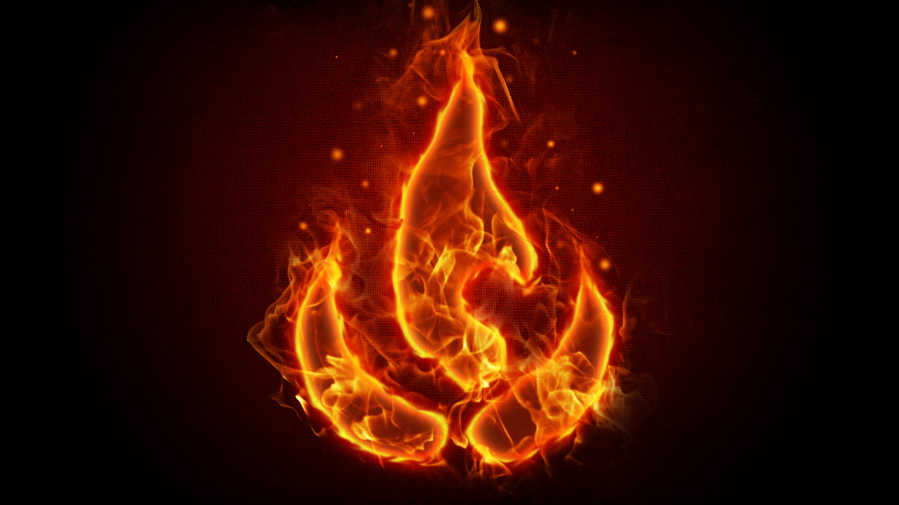

FIRE - NORTHERN SHAOLIN LONG FIST (External) & XING YI QUAN (Internal) - FLEXIBILITY & ENDURANCE
Level 1:
Beginner Long Fist Sequences
12 Tan Tui - Spring Legs
Chong Chui - Thrusting Fist
Shi Zi Tui/Ti Da - Cross Leg
Pi Za - Chopping Smash
Cheng Pan/Cheng Ba - Prop Stirring
Jia Da - Block Strike
Gou Lian - Hook Linking
Deng Chuai - Heel Kick
Fan Shen - Turning The Body
Peng Suo - Colliding Lock
Jian Tan/Jain Bu - Arrow Kicking
Shuang Tiao - Double Jumping
Pie Shen Quan - Covering The Body Fist
Beginner Shaolin Chin Na
Xing Yi Quan - 5 Phases
Level 2:
Level 3:
Advanced Long Fist Sequences
Advanced Shaolin Chin Na
Xing Yi Quan - 12 Animals & Applications
Level 4:
Master Long Fist Sequences
Master Shaolin Chin Na
Massage Therapy
Weapons Training